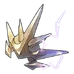

| Nome | Bailu |
|---|---|
| Elemento | Trovão | Raridade | ✦ ✦ ✦ ✦ ✦ |
| Caminho | A Abundância |
| Sexo | Fêmea |
| Especie | Vidyadhara |
| Facção | O Xianzhou Luofu | Mundo | O Xianzhou Luofu | Como obter | Personagem Evento Warp Partida Warp Stellar Warp | Data de Lançamento | 2023-04-26 | Adicionado pela primeira vez | Versão 0.9.0 |
Ascensões e estatísticas
| Fase de Ascensão | Level | Base HP | Base ATK | Base DEF | Base SPD |
|---|---|---|---|---|---|
| 0✦ | 1/20 | 179 | 76 | 66 | 98 |
| 20/20 | 350 | 149 | 128 | 98 | |
| 1✦ | 20/30 | 421 | 179 | 155 | 98 |
| 30/30 | 511 | 218 | 188 | 98 | |
| 2✦ | 30/40 | 583 | 248 | 214 | 98 |
| 40/40 | 673 | 287 | 247 | 98 | |
| 3✦ | 40/50 | 745 | 317 | 273 | 98 |
| 50/50 | 834 | 356 | 306 | 98 | |
| 4✦ | 50/60 | 906 | 386 | 333 | 98 |
| 60/60 | 996 | 424 | 366 | 98 | |
| 5✦ | 60/70 | 1.068 | 455 | 392 | 98 |
| 70/70 | 1.157 | 493 | 425 | 98 | |
| 6✦ | 70/80 | 1.229 | 524 | 452 | 98 |
| 80/80 | 1.319 | 562 | 485 | 98 |
| Nível | Custo de Evolução | Materiais de Ascensão do Personagem | Materiais Necessários |
|---|---|---|---|
| 0 → 1 ✦ |  4,000 4,000 |
 5 5 |
|
| 1 → 2 ✦ | 8,000 |
10 |
|
| 2 → 3 ✦ | 16,000 |
3 |  6 6 |
| 3 → 4 ✦ | 40,000 |
7 | 9 |
| 4 → 5 ✦ | 80,000 |
20 |  6 6 |
| 5 → 6 ✦ | 160,000 |
35 | 9 |
Habilidades de combate
| Icone | Tipo | Nome | Descrição | Marcação | Energia | Resistência DMG |
|---|---|---|---|---|---|---|
| ATK básico | Pontapé de diagnóstico | Causa Lightning DMG igual a 50%–130% do ATK de Bailu para um único inimigo. | Alvo único | Geração: 20 | 30 | |
| Skill | Cantando entre nuvens | Cura um único aliado em 7,8%–13,65% do HP máximo de Bailu mais 78–399,75 . Bailu então cura aliados aleatórios 2 vezes. Após cada cura, o HP restaurado da próxima cura é reduzido em 15%. | Restaurar | Geração: 30 | ||
 |
Ultimate | Abençoado Trovão | Cura todos os aliados em 9%–15,75% do HP máximo de Bailu mais 90–461,25 . Bailu aplica Invigoration a aliados que ainda não estão Invigorated. Para aqueles já revigorados, Bailu estende a duração de seu revigoramento em 1 turno. O efeito de Revigoração pode durar 2 turno(s). Este efeito não pode se acumular. | Restaurar | Custo: 100 Geração: 5 | |
| Talento | Cabaça de Elixir | Depois que um aliado com Invigoration é atingido, restaura o HP do aliado em 3,6%–6,3% do HP máximo de Bailu mais 36–184,5 . Este efeito pode desencadear 2 vez(es). Quando um aliado recebe um golpe mortal, ele não será derrubado . Bailu cura imediatamente o aliado em 12%–21% do HP máximo de Bailu mais 120–615 HP. Este efeito pode ser ativado 1 vez por batalha. | Restaurar | |||
| Técnica | Passear na chuva | Depois de usar a Técnica, no início da próxima batalha, todos os aliados recebem Invigoration por 2 turno(s). | Apoiar |
Eidolons
| Icone | Nome da habilidade | Nivel | Descrição |
|---|---|---|---|
| Água Ambrosial | 1 | Se o HP atual do aliado alvo for igual ao HP máximo quando o revigoramento terminar, regenera 8 energias extras para este alvo. | |
| Sono Sílfico | 2 | Depois de usar seu Ultimate, a cura de saída de Bailu aumenta em 15% adicionais por 2 turnos. | |
| Opulência Onisciente | 3 | Habilidade Nv. +2, até um máximo de Lv. 15. Talento Nv. +2, até um máximo de Lv. 15. | |
| Excisão Maligna | 4 | Cada cura fornecida pela Habilidade faz com que o destinatário cause 10% a mais de DMG por 2 turno(s). Este efeito pode acumular até 3 vez(es). | |
| Preocupações Minguantes | 5 | Nível final +2, até um máximo de Lv. 15. ATK Básico Lv. +1, até um máximo de Lv. 10. | |
| Gota Babando da Divindade Dracônica | 6 | Bailu pode curar aliados que receberam um golpe mortal mais de 1 vez em uma única batalha. |
Traços
| Custo Total (1 → 6 para rastreamento de ATK básico) | ||||||
|---|---|---|---|---|---|---|
| 240.000 |
6 |
7 |
7 |
3 | 8 | 11 |
| Custo total (1 → 10 para um rastreamento) | ||||||||
|---|---|---|---|---|---|---|---|---|
| 652.500 |
9 |
13 |
7 |
3 | 15 |  30 30 |
.webp) 3 3 |
 2 2 |